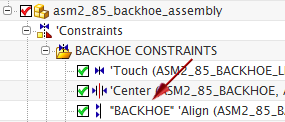

In the Assembly Navigator, expand the Constraints node.
Expand the BACKHOE CONSTRAINTS folder.
Rename the Align (ASM2_85_BACKHOE_LINK, ASM2_85_BACKHOE) constraint to backhoe.
The newly-created user name is placed at the end of the constraint name.
(Optional) Rename additional constraints.
Right-click in the background of the Assembly Navigator and choose Properties.
In the Assembly Navigator Properties dialog box on the General tab, from the Display Constraint Names list, select User and System.
Click Apply.
Note that the named constraint has the user name in front of the system name.

(Optional) Repeat the last two steps, selecting System Only and User Replaces System from the Display Constraint Names list.
From the Display Constraint Names list, select System and User (the default), and click OK.
Close the part without saving.